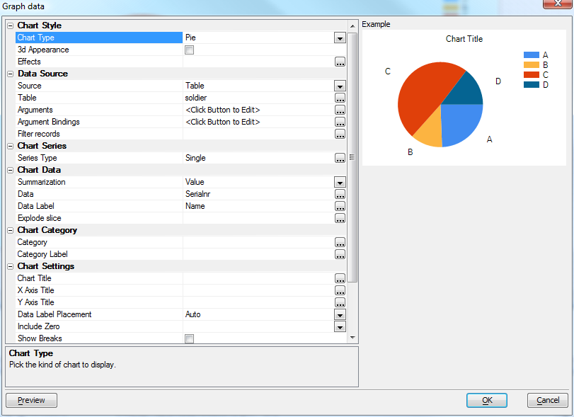

Chart Control V11
The Chart Control is used by several other components and subsystems: the Web Chart Component, Reports, the Chart Alternate View, and desktop Forms. This article explains the common functionality provided by the Chart Control Genie.
The screen shot above shows the default chart setup dialog; this particular one was brought up from the desktop Form Designer. The table below lists all the controls that can appear on the Chart property sheet, and describes each one's usage.
| Control | Description |
|---|---|
| Chart Style | |
| Chart Type | Bar Vertical Grouped, Bar Vertical Stacked, Bar Vertical Overlaid, Bar Horizontal Grouped, Bar Horizontal Stacked, Line, Area, Spline, SplineArea, StackedArea, Radar, Pie, Doughnut, Funnel, Pyramid, Stock, Candlestick, Bubble. |
| 3d Appearance | Use three-dimension effects? |
| Effects | Other chart effects; what is offered depends on the chart type and 3d setting. Possible options are None, Concave, SoftEdge, Circle, Polygon, Line, Marker, Area, Circular Base, Square Base, Cylinder, Emboss, Light To Dark, Wedge |
| Data Source | |
| Source | Table, SQL, Custom, or (in the context of a report) Report |
| Table | Table or Set name, only offered if Source is Table |
| Connection | SQL connection, only offered if Source is SQL |
| Select Statement | SQL select statement, only offered if Source is SQL |
| Use Portable SQL | Portable or native SQL syntax, only offered if Source is SQL |
| Arguments | Not offered if Source is Report |
| Argument Bindings | Not offered if Source is Report |
| Filter records | Filter the data being graphed (optional additional global filter). Only offered if Source is Table |
| Custom Source | Populate chart from Xbasic. Only shown if Source is Custom |
| Custom Watch | Trigger re-populate of chart when value changes. Only shown if Source is Custom |
| Chart Series | |
| Series Type | How series is populated. Single means plot one series only, multiple record means same column, but separate records, multiple column means multiple values are plotted from a single record. Only offered if chart type supports multiple series |
| Series | Data series group key (used to define the key to use for each series). Only offered if chart type supports multiple series and this is in a report context |
| Series Expression | Expression to generate the series break/order. Used as label if Series Label Expression is not defined. Only shown for Multiple Record series |
| Series Label Expression | Expression to generate the label for each series entry. Only shown for Multiple Record series |
| Plot Series on Axis | Instead of plotting category along the x axis, plot the Series. Category used for the legend. If this option is left off, Category gets plotted on the axis, Series is used for the legend. Only shown when there are multiple series |
| Chart Data | |
| Summarization | Select sample data versus summarize data. Options are Value, Summary, Count, Average, Standard Deviation, First, Last, Min, Max |
| Data | Data points to sample. Only shown when the series type is not Multiple Column |
| Data Columns | Opens an editor for Series names and expressions |
| Sample unique | Pick expression on which to group summarization unique values. Only shown if Summarization is Value and source type is not Report |
| Sample at | Select the report group at which to sample each value. Only shown if source type is Report. The Sample at group must be within the Sample Over group. |
| Sample Over | Select the report group to sample each value over. Only shown if source type is Report |
| Data Label | Optional data label expression for chart. Used to label the data points. |
| Explode slice | Optional data point pie chart exploded setting. Only shown for Pie charts. |
| Chart Category | |
| Category | ex<x>pression. Field that indicates grouping and order for data points if X axis contains labels. |
| Category Label | ex<x>pression. Optional Category label override (if omitted, Category will be used). |
| Chart Settings | |
| Chart Title | Expression for title to display on chart. |
| X Axis Title | Expression for x-axis title to display on chart. |
| Y Axis Title | Expression for y-axis title to display on chart. |
| Data Label Placement | Auto, None, Legend, or Chart |
| Include Zero | Include zero in the y axis |
| Show Breaks | Show breaks in sparse graph data |
| Chart Style | |
| Chart Style | Edit stylesheet (colors, line styles and fonts) |
| Events | |
| Event Handler | Code to handle chart mouse events. Prototype is as shown below. |
' Handle a click on graph data function OnClickData as c( e as p ) ' e contains ' e.obj(P) - pointer to objects ' e.series(N) - series # ' e.index(N) - data # ' e.data(N) - data value end function ' Handle a flyover event on graph data function OnFlyoverData as c( e as p ) end function ' Handle a click on graph series function OnClickLegend as c( e as p ) end function ' Handle a flyover event on graph series function OnFlyoverLegend as c( e as p ) end function
Videos
| Number | Category | Description |
| DT2 | Layout Editors - Embedded Charts | Alpha Five V11 introduces a powerful charting engine. Charts can be
used in Form, Reports, Labels, Letters, Xdialogs, and Web Components.
This video shows how a chart can be embedded into a form.
|
| DT3 | Charts - Xdialog Examples | The charting features in V11 can be used in Xdialogs. The following
video show how you can embed custom charts in your own Xdialogs.
The Xdialogs shown in the above video are all in the sample 'Learning Xdialog' database that ships with V11. Since there are many example scripts in 'Learning Xdialog' that would be useful to have quick access to, regardless of which database you are working in, we show in this video how you can easily create a Code Library from the examples in 'Learning Xdialog'. |
| DT4 | Forms - Embedded Charts - Charting Summary Data | The charts that you embed on a Form or Report can plot summary data.
The charts can either be defined declaratively, or you can use custom
Xbasic.
These videos show how a chart that summarizes attendees at a seminar by state can be defined using the built-in Chart Genie, or using Xbasic. The sample database used in the videos can be be downloaded here.
|
See Also
Chart API V11Chart Component V11
Embedding Charts in Reports V11
Chart Alternate View V11
Using Charts on Forms V11
Using Charts in Xdialogs V11